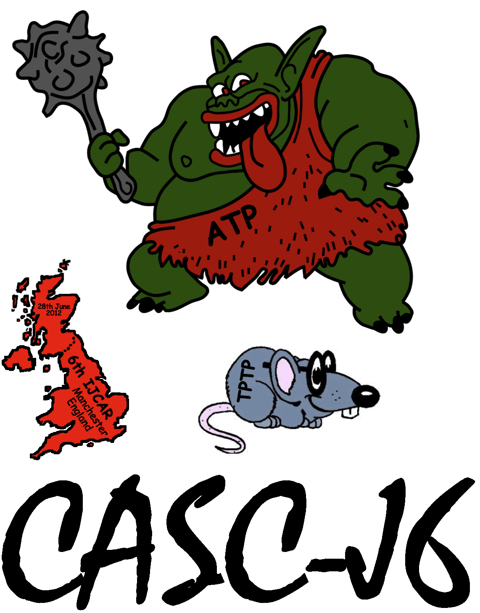

Conclusion

- Fulfilled the main aims and motivations
- Evaluated the relative abilities of ATP systems
- Stimulated development and use of ATP systems
- Lots of action, lots of differences
- CASC@Turing with serious $$$prizes$$$
- FOF and FNT with CNF
- Machine learning
- Prover9
- "It's not possible!"
- See all the details online at http://tptp.org/CASC/J6
- Next year ...
- Drop CNF problems
- Intersection with SMT-COMP
- Another great T-shirt, Automated gambling
- Your Prover (You)